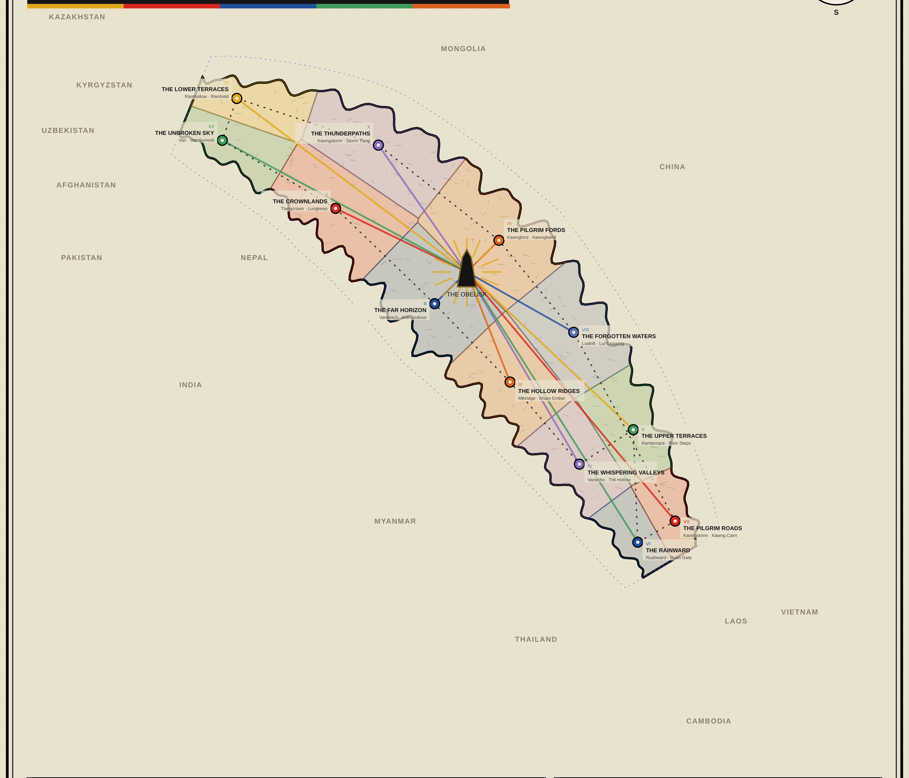

Zomia

| Type | Highland macroregion |
|---|---|
| Setting of | The Anarchy! of Zomia |
| Governing body | None; see the Obelisk |
| Core / seat | The Obelisk ("Anarchy") |
| Subdivisions | Twelve Regions |
| Inhabitants | The Seven Anarchons |
| Ability scores | Chakna (Body) · Rilru (Mind) |
| Rulebook | The Anarchy! of Zomia |
| Created by | DM Holocene |
| Real-world basis | Zomia (W. van Schendel, 2002); The Art of Not Being Governed (J. C. Scott, 2009) |
Zomia is the highland macroregion at the center of The Anarchy! of Zomia, an original political fantasy tabletop setting credited to DM Holocene. Its name and its founding premise echo a real academic concept: a vast highland refuge across the hill country of mainland Southeast Asia and its neighboring plateaus, historically defined by distance from lowland states rather than by any fixed border.
Zomia is organized into twelve constituent regions strung along a single highland arc, running from the Tibetan border country in the northwest to the Mekong lowlands of Laos and Cambodia in the southeast. Beneath the regions runs a network of leylines, converging on one obsidian monolith called the Obelisk and known locally as Anarchy. Seven self-governing associations, the Anarchons, each keep a Domain of technique and draw on these leylines in their own way.
The term and its founding argument recall historian Willem van Schendel, who coined "Zomia" in 2002 to describe this upland zone, and political scientist James C. Scott, whose 2009 study The Art of Not Being Governed: An Anarchist History of Upland Southeast Asia reframed highland statelessness as a sustained political choice rather than a failure to modernize, a reading that extends further into the ethnographic work of Jean Michaud and Edmund Leach.
Etymology and real-world inspiration
Scott's study frames highland flight from the state, shifting cultivation, oral tradition, and fluid ethnic identity as deliberate strategies of evasion rather than backwardness. Michaud stresses Zomia's ethnolinguistic diversity instead, cautioning against treating the massif as one unified culture. Leach's earlier study of highland Burma describes political systems that swing between hierarchical and egalitarian forms across time rather than settling into either. The Anarchy! of Zomia draws on all three: its seven Anarchons are separate associations rather than one unified order, its Ten Unwritten Laws stand as shared convention rather than imposed code, and its political systems are built to shift.
Geography
The highlands form a single crescent-shaped massif, narrow at both ends and widest near its historical core, where the borders of Myanmar and China meet. Local cartography divides the massif into twelve regions, each built around one or two capitals and bound to its neighbors by old pilgrim roads rather than drawn boundary lines.
Terrain and climate
Elevation across Zomia runs from mid-altitude river terraces to peaks that hold snow past the start of the planting season. The massif's spine is limestone and granite, broken by karst sinkholes in the Hollow Ridges and glacial cirques in the Unbroken Sky; between the ridgelines, terrace agriculture turns the steep ground into shelves of rice, buckwheat, and tea. Two monsoons govern the year: a wet southwest monsoon that fills the lowland paddies first and reaches the highlands weeks later as fog and slow rain, and a dry, cold season in which the ridges clear and sightlines stretch for a day's walk. The combination of terrain and weather has historically slowed every army, railway, and survey team that has entered the massif from the lowlands, a pattern consistent with Scott's account of highland geography as a political resource in itself.
A layered network of footpaths, pilgrim roads, and, in the present day, the Ley Rail stands in place of any connected road grid. A journey between adjacent regions can still take longer than the straight-line distance suggests, since routes bend around ridgelines rather than over them.
Hydrology
Zomia sits astride the headwaters of several of mainland Southeast Asia's great rivers. The Forgotten Waters take their name from a river system whose channel moves within its own floodplain from year to year, feeding systems that lowland cartographers associate with the upper Mekong and Salween; the Rainward region drains west toward the Irrawaddy watershed, and the Far Horizon's streams run north toward the Brahmaputra basin. Highland communities have historically measured a region's wealth by its irrigated terrace area rather than by the rivers themselves, since each river passes briefly through many regions in turn and settles permanently in none.
The Twelve Regions
| No. | Region | Capitals | Character |
|---|---|---|---|
| I | The Crownlands | Tlangcrown · Lungkeep | Highest stone villages and ancient fortresses |
| II | The Far Horizon | Vanreach · Arsi Lookout | Open terraces and starwatching traditions |
| III | The Hollow Ridges | Meiridge · Kham Ember | Smoke ridges and living forges |
| IV | The Whispering Valleys | Vanecho · Thli Hollow | Deep valleys where voices return |
| V | The Upper Terraces | Ramterrace · Ram Steps | Monumental terraces and communal granaries |
| VI | The Rainward | Ruahward · Ruah Gate | Rain-soaked highlands that resist conquest |
| VII | The Pilgrim Roads | Kawngstone · Kawng Cairn | Ancient roads and pilgrimage monuments |
| VIII | The Forgotten Waters | Luidrift · Lui Crossing | Shifting rivers that redraw the land |
| IX | The Pilgrim Fords | Kawngford · Kawngbend | River crossings and mountain choke points |
| X | The Thunderpaths | Kawngstorm · Storm Tlang | Lightning peaks and paths of fugitives |
| XI | The Lower Terraces | Ramhollow · Ramhold | Fertile terraces and longhouses |
| XII | The Unbroken Sky | Van · Van Summit | Wind-swept highlands beyond empire |
History
Zomia keeps its history scattered rather than bound into any single chronicle, surviving instead as overlapping oral records, pilgrim-road inscriptions, and the proverbs carried inside technique names passed master to student. This is consistent with Scott's argument that highland societies have long treated the absence of written chronology as a defense against lowland record-keeping and taxation. Historians group the surviving record into four loose eras, with a fifth still being written.
Flight and founding
The oldest layer of Zomia's history is a flight story repeated, with local variation, in every one of the Twelve Regions: a lowland population, fleeing a tax collector, a conscription order, or a collapsing kingdom, climbs into the hills and stays there. Successive waves arrived over a span that surviving record leaves undated, each adding a terrace, a hill fort, or a pilgrim shrine to ground already settled by an earlier wave. The Obelisk itself is said to have been standing before the first of these migrations, an existing feature of the landscape rather than a highland construction, and its leylines are described as having drawn settlement toward the historical core at the Myanmar-China bend long before anyone organized the Ley Rail that now runs beneath it.
The Compact of the Ten Laws
Local tradition places the founding of the Ten Unwritten Laws at a gathering of delegations from across the massif, convened at the foot of the Obelisk by elders who came from different language families and different lowland conflicts, united only by a shared wish to avoid becoming what they had fled. The Compact that resulted went unrecorded by design; each Law was instead distributed across the regions as a story, a proverb, or a dispute-resolution custom, scattered deliberately beyond the reach of any single archive that could be seized or burned. The seven Anarchons trace their own founding to the same gathering, emerging as voluntary associations built around seven different Domains of practice already in scattered use, rather than as factions carving the massif into territory.
The Concession years
Zomia's closest brush with conquest came in an era local chroniclers call the Concession years, when surveyors and company agents from the surrounding lowland states pushed cartography, teak and mineral concessions, and salt-road tolls into the lower valleys. The highlands answered less with battle than with the strategies Scott's scholarship documents in the real massif: shifting cultivation that left surveyors nothing fixed to tax, dispersal into terrain that defeated every concessionaire's map, and, where pressure was greatest, outright withdrawal higher into the ridges. The Thunderpaths and Pilgrim Fords, regions whose character is still described as paths of fugitives and mountain choke points, trace their present character to this era, when Zalenpath's Anarchons guided refugee households along routes that concession surveys left permanently unfinished.
The Rail years
The Ley Rail rose from cooperative labor drawn from across the Twelve Regions, region by region, over a sustained period remembered simply as the Rail years, entirely independent of any outside power. Each of the eight lines was raised by the Anarchon whose Domain ran strongest along its route, with the Kawng Line, the rim-circling pilgrim loop, left open deliberately so the completed network would belong to the massif as a whole rather than to any one association. The Rail years are remembered as the point at which Zomia's highland communities, without ever forming a central government, still built shared infrastructure on a scale the surrounding lowland states had assumed the hills were incapable of attempting. The same years produced the setting's best-documented inter-Anarchon rift, when Zalenpath guides began rerouting Severance Line traffic around a Luibond toll station at Luidrift rather than pay a crossing fee Luibond considered standard and Zalenpath considered an attempt at ownership of a shared current; the dispute ran for two full construction seasons before a Vanchord-mediated hearing settled it under the Third and Ninth Laws, an episode still cited whenever a new line's tolling arrangement comes up for negotiation.
The contemporary era
Three episodes define Zomia's political life in the present day. The Ramterrace mining dispute, named for a concession a lowland-based mineral company secured over a stretch of the Upper Terraces, was resolved when Ramkeep organized a region-wide withdrawal of labor and water-rights cooperation rather than direct confrontation, citing the Fourth Law's limit on absolute land possession; the company's concession lapsed within two growing seasons for lack of a workforce willing to staff it. The Gate-Node Accords followed soon after: a loose set of understandings, left unsigned as any single treaty, under which several surrounding states agreed to recognize dual standing for Anarchy-affiliated households, in return for the regional councils' agreement to flag large-scale leyline extraction projects before they began. And the Luibond-Zalenpath reconciliation, closing the old Rail-years rift between the two Anarchons, was formalized at a joint hearing where both associations agreed to waive tolls on each other's members along the Severance and Covenantcraft Lines, a gesture still renewed by custom rather than by any standing agreement.
Demographics and languages
Zomia has escaped every census that its own residents might trust, a condition the massif's communities have historically treated as protection rather than deficiency. Scholars working from the region's own oral and inscriptional record estimate a population scattered unevenly across the Twelve Regions, concentrated in the terraced river valleys and thinning toward the ridgelines, with every language, descent group, and Anarchon remaining a minority against the whole.
Language families
Everyday speech in Zomia divides into several loosely related highland language families, distinct from the Domain names carried by the Anarchons and from the archaic ritual register used in technique names and Chakna invocation, which linguists in the setting term Rootspeech. The Tlang-Van family dominates the Crownlands, the Unbroken Sky, and the Far Horizon; a Ruah-Kham family is spoken across the Rainward and the Hollow Ridges; a riverine cluster sometimes called Lui-Mei covers the Forgotten Waters and the Whispering Valleys; and the Terrace family links the Upper and Lower Terraces despite the physical distance between them, a relationship local linguists attribute to repeated migration along the pilgrim roads rather than to shared origin. A Kawng trade pidgin, drawn from all four families plus lowland loanwords, serves as the common tongue of the Gate-Node Markets and the Ley Rail, and is the language most outsiders encounter first.
Religion and belief
Belief in Zomia runs toward ancestor veneration and household spirit-keeping rather than toward any single organized faith, a pattern consistent with Leach's and Michaud's accounts of the real highland massif. Successive flight-era migrations carried Buddhist, animist, and smaller Christian and Muslim lowland traditions into the hills, and most households now layer several of these practices rather than choosing one; the Obelisk itself is approached less as an object of worship than as a shared reference point, a place where a vow carries extra weight because so many generations have sworn one there before.
A note on ethnicity and the Anarchons
Zomiapedia editors stress that the Anarchons, covered in full below, are voluntary associations organized around seven Domains of practice and cut across every language family and descent line described above; an individual Lungscript archivist and an individual Lungscript smith may keep entirely separate home languages and entirely separate ancestries, sharing only a common oath. This follows Michaud's caution, cited in Etymology above, against treating highland populations as a unified culture.
The Obelisk
At the center of the massif rests Anarchy, an obsidian Obelisk whose underground leylines bind otherwise independent territories together. Anarchy is neither a god nor a government: it commands none and crowns none. Its power rises only from the relationships among the communities it touches, answering to how people cooperate, separate, remember, and resist domination.
The Ten Unwritten Laws
These ten principles stand as shared convention among the Anarchons rather than commandments handed down by a central authority. They can conflict with one another, and individual Anarchons weigh customary authority, personal autonomy, collective welfare, and ancestral obligation differently; the tensions between them form the basis of most political disputes in the setting.
- None shall own the will of another.
- Those fleeing domination may seek sanctuary.
- Freely formed bonds create responsibilities.
- The earth may be tended; none may possess it absolutely.
- Paths between peoples must remain open.
- Every generation may inherit and contest its history.
- Every person retains the right to challenge authority.
- Freely accepted gifts establish obligations that may be renegotiated.
- Every community retains the right to withdraw from an alliance.
- None shall claim sovereignty over the Obelisk.
The Seven Anarchons
An Anarchon is a self-governing association of communities, open to anyone it accepts. Each keeps a Domain of technique and holds one right above the rest. Membership is a matter of loyalty rather than birth, and an Anarchist may use a technique of any Domain.
| Anarchon | Domain | Right |
|---|---|---|
| Vanveil | Veilcraft | The right to disappear |
| Ramkeep | Rootcraft | The right to keep the land whole |
| Lungscript | Mnemonics | The right to remember |
| Luibond | Covenantcraft | The right to stand together |
| Tlanghaven | Thresholdcraft | The right to give refuge |
| Zalenpath | Severance | The right to leave and begin again |
| Vanchord | Resonance | The right to belong to the common network |
Editorial note: the Anarchons are inventions rather than depictions of real peoples. Their names, and the names of techniques and places throughout the setting, follow a fictional Mizo-English style built on roots such as Van, Tlang, Zalen, Kawng, and Ram; the compounds are stylistic rather than authentic Mizo expressions, and are offered with respect for the living peoples whose words suggested them. Earlier printings of this article had linked each Anarchon to a real ethnolinguistic group (Hmong, Karen, Lisu, Jingpo and Kachin, Akha, Lahu, and Zo-related communities); later editing replaced that scheme with the invented names above.
Membership in an Anarchon is a matter of loyalty rather than territory; governing a region the way a state governs a province sits outside any Anarchon's claimed authority. Even so, each has grown most visible around the regions where its founding generation settled, and keeps halls, training rings, and archives concentrated there.
Vanveil
Vanveil is most visible around the Unbroken Sky and the Far Horizon, the wind-swept, high-altitude regions where its founders are said to have walked into fog and reappeared only once the surveyors had moved on. Veilcraft, its Domain, treats concealment as a right rather than a trick: Vanveil halls teach that a household's first duty is the ability to vanish, and its elders are credited with having carried the most refugee lineages through the Concession years undetected. Its members are stereotyped, sometimes unfairly, as reluctant to commit to anything that cannot later be walked away from.
Ramkeep
Ramkeep's strongholds are the Upper and Lower Terraces, where its founding generation turned flight into agriculture, building the stepped granaries that still define those regions' skylines. Rootcraft, its Domain, is taught less as combat magic than as a discipline of soil, seed, and healing, and Ramkeep halls double as seed banks that other Anarchons draw on after a bad season. Of the seven, Ramkeep is the most frequently consulted on disputes over land use, since the Fourth Unwritten Law and its limit on absolute possession of the earth is treated as its particular charge.
Lungscript
Lungscript is centered on the Crownlands, whose fortress-archives at Lungkeep hold the massif's largest collection of oral-history recordings, inscribed stone, and song-cycles. Mnemonics, its Domain, is described as the discipline of refusing to forget, and Lungscript's elders served as the primary keepers of the Compact of the Ten Laws in the centuries before the Rail years, carrying its unwritten text between regions by memory alone. Zomiapedia editors note the obvious tension between an order dedicated to memory and a highland culture that otherwise prizes the unrecorded; Lungscript's own elders resolve it by distinguishing memory held in people from memory held in archives that outsiders could seize.
Luibond
Luibond is rooted in the Forgotten Waters, where a river system that redraws its own channel every flood season forces constant, binding cooperation between households on opposite banks. Covenantcraft, its Domain, governs oaths and bonds, and Luibond's techniques are disproportionately Mend and Guard effects that protect or restore allies rather than attack. The Anarchon is credited with having organized the longest-running of the Ley Rail's construction crews during the Rail years, on the reasoning that a line through unstable terrain required stronger oaths than any other.
Tlanghaven
Tlanghaven shares the Crownlands with Lungscript, its halls built into the same fortress walls at Tlangcrown that give the region its name, though its purpose is shelter rather than record-keeping. Thresholdcraft, its Domain, governs wards, barriers, and passage, and Tlanghaven's defining institution is the open door: any household that reaches a Tlanghaven hall during the Concession years was owed shelter under the Second Unwritten Law regardless of which other Anarchon it answered to. Zombat's famous Tlangring, raised above Tlangcrown, is maintained by Tlanghaven even though the sport itself remains open to every Anarchon alike.
Zalenpath
Zalenpath keeps to the road rather than any single capital, moving along the Pilgrim Roads, the Pilgrim Fords, and the Thunderpaths, the fugitive-path regions its guides helped open during the Concession years. Severance, its Domain, covers entropy, dissolution, and transformation, and Zalenpath frames departure itself as a right worth defending: its elders argue that a community able to leave any arrangement, including its own Anarchon, is the clearest proof the arrangement remains freely chosen. Critics within the setting, chiefly Luibond's, describe Zalenpath's halls as the hardest of the seven to find twice.
Vanchord
Vanchord is the one Anarchon without a regional stronghold, keeping its halls at the Obelisk itself and along the Resonance Line that loops through every one of the Twelve Regions. Resonance, its Domain, governs spirits, ancestral echo, and the leyline current shared by the whole Ley Rail network, and Vanchord's members are disproportionately drawn from the Rail years' construction crews who chose to keep traveling once the lines were finished. Because Resonance technique touches every other Domain at some point on the Wheel of Anarchons, Vanchord is informally treated as a mediator between the other six, its influence resting on custom alone rather than any formal authority to compel agreement.
Anarchists
An Anarchist is anyone who takes part in Anarchy: a farmer, healer, engineer, student, clerk, lawyer, trader, archivist, soldier, teacher, or courier. Citizenship in a modern state and duty to an Anarchon can sit side by side. One rule sits above every other an Anarchist carries: an Anarchist stays ungoverned, and means to remain so. Even an Anarchon itself earns only as much obedience as its faith deserves; the day it starts issuing orders instead of keeping faith is the day it becomes the very thing the Unwritten Laws stand against.
Politics and governance
Zomia has avoided forming anything resembling a central government across every era its history records, and disputes within the massif are settled instead through a layered system of regional councils, Gate-Node Market arbitration, and direct appeal to the Ten Unwritten Laws. A council seat is held by custom rather than election in most regions, typically by whichever household or Anarchon hall has mediated the most disputes fairly over time, and a council's rulings carry weight only as long as the parties involved continue to honor them voluntarily, consistent with the Seventh and Ninth Laws.
Relations among the seven Anarchons run from close cooperation, as between Ramkeep and Luibond over shared agricultural land, to long-running friction, as the Rail-years rift between Luibond and Zalenpath demonstrates; Zomia's political culture treats this friction as a working feature of highland politics rather than a flaw to resolve, since the Wheel of Anarchons gives every pair of Domains a structural relationship, harmonious, distant, or openly antagonistic, that everyday dealings are expected to surface rather than smooth over.
Relations with the surrounding lowland states remain the massif's central political fact. The Gate-Node Accords, discussed above, give most Anarchy-affiliated households dual standing with a neighboring state, but the arrangement is informal enough that its terms shift from one state and one administration to the next, and resource-extraction pressure resembling the Ramterrace mining dispute recurs with each new concession map drawn in a lowland capital. The Lowlands, covered below, examines this pressure from the surrounding states' side of the relationship.
The Ley Rail
Where the leylines run close to the surface, cooperatives have built the Ley Rail: bamboo-and-aluminium carriages that ride the current from gate-node to gate-node, silent, unlit, unscheduled, and free to ride. Eight lines cross the range, each kept by the Anarchon whose Domain runs strongest along it, with one exception: the Kawng Line, the pilgrim loop around the rim, belongs to nobody and is ridden by everybody. Every line passes through the Obelisk; carriages slow there and roll on, while pilgrims who wish to stand before it walk the last mile.
| Line | Kept by | Route |
|---|---|---|
| Veilcraft Line | Vanveil | North to south through the Obelisk |
| Rootcraft Line | Ramkeep | West to east under the Thunderpaths and over the Whispering Valleys |
| Mnemonics Line | Lungscript | From the Unbroken Sky down to the Rainward |
| Covenantcraft Line | Luibond | From the Far Horizon to the Forgotten Waters |
| Thresholdcraft Line | Tlanghaven | Terrace to terrace through the Obelisk |
| Severance Line | Zalenpath | From the Hollow Ridges to the Pilgrim Fords |
| Resonance Line | Vanchord | The upland loop around the Obelisk, linking every station |
| Kawng Line | No single Anarchon | The pilgrim loop around the whole range |
Rules of Anarchy
What outsiders call "technique" and "Anarchy Points" are, to an Anarchist, simply the vocabulary of ability: the terms by which the leylines' current is measured, drawn, and spent. The sections below set out that vocabulary as it is used across the Twelve Regions.
Chakna and Rilru
Every Anarchist is measured by two capacities, Chakna (Body) and Rilru (Mind), each running from 0 to 15. A contested or uncertain act is weighed against a Difficulty running from 10, for an easy act, to 30, for one so rare that living memory holds only a single telling of it. Anarchy Points (AP) measure how much of the leylines an Anarchist can presently shape; the pool opens at 6 and rises and falls with circumstance rather than along any fixed progression, and drawing on a technique spends 1 AP. Every technique falls into one of three families: Break, an attack against Body or Mind; Mend, a restoration of Body, Mind, armor, or AP; and Guard, a reaction that turns aside an opposing Break or Mend.
The Wheel of Anarchons
The seven Domains sit in a circle in a fixed order: Veilcraft, Severance, Mnemonics, Resonance, Covenantcraft, Rootcraft, Thresholdcraft, and back to Veilcraft. Every technique is bound to one other Domain, and its deeper effect wakes only when a technique of that bound Domain is also held by the same Anarchist. A neighbor on the Wheel is a Harmony; two steps away is a Dissonance; the far side of the Wheel is an Antagonism. When an Antagonism wakes between techniques of different families, a Break bound to a Mend or a Guard, it becomes a Paradox and draws unusual strength from the contradiction.
Every Anarchist answers to a Base Anarchon and draws on two further Ley Sources; technique may be drawn only from those three Domains. A cell or an individual Anarchist whose chosen Domains hold an Antagonism among themselves is spoken of as a Paradox build, prized across the massif for the contradiction it carries.
Anarchy Points and the five paths
Five paths lead to Anarchy Points, and highland custom treats each as equally legitimate; none is held above the others.
| Path | Earns AP when an Anarchist |
|---|---|
| Exploration | reaches a place missing from every map, climbs higher than before, or finds where a leyline surfaces |
| Invention | builds, repairs, or rewires Zomtech that changes what people can do |
| Relationships | keeps a promise, shelters someone, wins a Zomiamon's trust, or settles a feud without blood |
| Competition | fights a bout in a Zombat ring under a chosen Zombat name, win or lose |
| Combat | defies a master, defends someone's freedom, or holds ground that could have been abandoned |
Zombat
Main article: Zombat
Zombat, formally Zomian Battle, is the massif's leading contact sport, fought to a yield rather than to death, in terraced rings found across the Twelve Regions. Fighters compete under a chosen Zombat name kept separate from their own, and every bout earns Anarchy Points for its fighters whether they win or lose, under the Competition path described above. Every Anarchon shares equal claim to the sport; its rings stand as common ground, maintained by whichever Anarchon settled nearest and fought over by every Domain alike.
Fighters are ranked by cord from Green to Obelisk, compete in formats ranging from the one-on-one Thread Match to the massif-wide Pilgrim's Circuit, and fight most often at one of three rings carrying standing across every region: the Tlangring above Tlangcrown, the flooded Luipit at Luidrift, and the Vancage over the drop at Van. The full article covers match formats, cords, bout rules, and each major ring in turn.
Society and institutions
Zomia's present day stands at the close of its fourth historical era and the start of a fifth: clinics and fiber lines reach the ridges, its people hold citizenship in the surrounding states, and the old foot paths between villages remain faster than the roads.
Zomtech
Zomtech is anything built in the highlands that runs on, or around, the leylines, from a phone charged at a gate-node to a bamboo drone that maps the next valley for its cooperative. Designs pass from village to village and improve at every stop; nobody holds the patents.
Gate-Node Markets
Wherever a leyline breaks the surface, a market grows around it. Currency carries little weight there: goods are bartered, labor is owed, and favors are remembered by the elders who sit at the edge of every market with nothing to sell. AP itself cannot be bought or sold, a rule every market keeps without being told.
Zomiamon and Kaiju
The leylines change whatever lives near them. Zomiamon are the resulting creatures, as ordinary in the highlands as livestock: a Tlangmoth grown to the size of a kite, a Ruahfrog that croaks a day before a flood, a Lungback tortoise with a shell of slate. Rarer, and far larger, are the Kaiju, giants that wake roughly once a generation where the leylines were abused, such as the Ramwyrm, which rose from a flooded reservoir, and the Tlangfather, which rose from a quarried mountain. A Kaiju's waking is remembered as the defining event of whichever years it falls within, marking a generation the way a war or a famine would mark one anywhere else.
The Lowlands
Below the ridgelines sit the surrounding states, their capitals, ministries, and paved roads. They reach the highlands as surveyors, companies with drilling proposals, soldiers, and teachers, each seeking to count something the hills have always preferred to leave uncounted. Zomia's own political culture treats this pressure as a recurring condition of highland life rather than as a war against any single enemy.
Development
The Anarchy! of Zomia remains in active, ongoing development by its designer. Its player-facing rulebook presents the setting as an interactive guide in a comic-poster visual language: halftone and sunburst backgrounds, riso-style accent colors, Bungee and Chakra Petch typefaces, and a choice of three print-inspired themes (Ink, Grunge, and Bubblegum). The rulebook includes a 350-node technique tree spanning the seven Domains, a downloadable character sheet called the Anarchist Record, and guidance for Zombat, Gate-Node Markets, and other institutions of play.
See also
References
- Scott, James C. The Art of Not Being Governed: An Anarchist History of Upland Southeast Asia. Yale University Press, 2009.
- van Schendel, Willem. "Geographies of Knowing, Geographies of Ignorance: Jumping Scale in Southeast Asia." Environment and Planning D: Society and Space, vol. 20, issue 6, 2002, pp. 647-668.
- Leach, Edmund. Political Systems of Highland Burma: A Study of Kachin Social Structure. Harvard University Press, 1954.
- Michaud, Jean. Historical Dictionary of the Peoples of the Southeast Asian Massif. Scarecrow Press, 2006.
This article covers an original, unpublished tabletop role-playing game setting still in active development. Details may change as design continues.